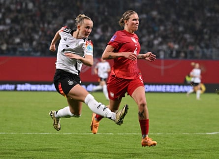

Alessia Russo (England)
Russo is coming into this tournament in the form of her career. Her 12 goals in the Women’s Super League played an integral role in the Gunners’ second-place finish and earned her a share of the Golden Boot, alongside Manchester City’s Khadija Shaw. She was also Arsenal’s top scorer in their run to securing the Champions League. Her productivity in front of goal has been the biggest improvement to her game.
If Euro 2022 was Russo’s breakout tournament and the 2023 World Cup the one where she came of age, this summer is a chance for the 26-year-old to stamp her authority as one of the best strikers on the continent. Her game is about much more than just her finishing ability, with her strong hold-up play, aerial presence and pressing ability all assets. She sets the tone for England from the front and has become a quiet leader in the squad.
Lea Schüller (Germany)
The 27-year-old Schüller is an instinctive striker and her form for club and country this season has made her one to watch. She amassed 16 goals in all competitions as Bayern Munich claimed their first domestic double with the striker scoring a hat-trick in the DFB Pokal final against Werder Bremen.
Schüller is a constant in the international setup and has been part of the squad at the last four major tournaments. She was Germany’s top scorer when they claimed the bronze medal at last summer’s Olympics and was similarly prolific in their latest Nations League campaign. Her five goals in the group stage played a key role in helping Christian Wück’s team to this autumn’s semi-finals. In a team full of attacking talent, she provides the focal point up front, supported by Klara Bühl, Jule Brand and Laura Freigang.
Lea Schüller scores against Poland in a Euro 2025 qualifier in May last year.Photograph: Annegret Hilse/Reuters
Clàudia Pina (Spain)
In a team full of stars, Pina is threatening to shine the brightest. The 23-year-old has taken the headlines this season with some sensational performances.
Pina’s potential has never been in doubt, with her natural technical ability and eye for goal clear. At the age of 13 in 2014-15 she scored 100 goals in 20 appearances for Barcelona’s Infantin-Alevín youth side (a season in which her team scored 279 goals in 21 games), and she made her senior debut at 16. Her 24 goals in all competitions this season helped Pere Romeu’s team secure a domestic treble, while she finished top scorer in the Champions League. Her 25-minute cameo in the first leg of the semi-final against Chelsea, in which she registered two goals and one assist, was particularly memorable.
She returned to the national setup in 2024 after a two-year absence. She was one of “Las 15” – the group of players who demanded better conditions from the Spanish football federation in 2022 – and subsequently ruled herself out of the 2023 World Cup. Her recent gamechanging double against England sent Montse Tomé’s side into the Nations League semi-finals.
Lineth Beerensteyn (Netherlands)
Over the last two seasons, Beerensteyn has started to realise her potential, finding the kind of form many expected from her when she first broke into the Dutch setup. In the absence of Vivianne Miedema, she has stepped up to lead the line. She finished as the Netherlands’ top scorer in Euro 2025 qualifying and in their recent Nations League campaign.
Domestically, she has also been prolific, winning the Frauen Bundesliga Golden Boot with Wolfsburg. It was a disappointing domestic campaign for the She-Wolves, who finished second behind Bayern Munich. Beerensteyn’s 16 goals, however, meant she matched Hoffenheim’s Selina Cerci at the top of the scoring charts.
The pacy 28-year-old can play anywhere across the front line. An injury towards the end of the season is a slight concern but the Dutch coach, Andries Jonker, seems confident she will be fit for the summer.
Esther González (Spain)
González’s four goals in her last four games for Spain have put her in the frame to be their first-choice No 9 this summer.
The 32-year-old is one of a handful of the Spanish squad to play abroad and has taken the National Women’s Soccer League by storm since joining Gotham FC in August 2023. She scored the goal that won them their first NWSL Championship a few months after joining and has been prolific at club level in the first half of this season.
González has been in and out of the national side since making her debut in 2016. She scored against England in their quarter-final defeat at Euro 2022 and captained the side on a couple of occasions at the 2023 World Cup. She has struggled to nail down a consistent starting role but her impressive recent form might change that in Switzerland.
Esther González lines up a shot in the Nations League game against England.Photograph: Eric Alonso/Getty Images
Marie-Antoinette Katoto (France)
Katoto is one of the most naturally talented forwards in the women’s game. Her domestic career to date has been played solely at Paris Saint-Germain. In the decade after making her senior debut, the 26-year-old racked up 180 goals in 223 appearances. She finished as their leading goalscorer in the 2024-25 season, her 12 Première Ligue goals helping them to a second-place finish in what turned out to be her final season at the club before this summer’s move to Lyon.
The tall striker is now looking to make her mark on the international stage. Her Euro 2022 was heartbreaking – she ruptured an anterior cruciate ligament in the group stage – and she failed to recover in time for the World Cup, so last year’s Olympics was her first major tournament for the national team. She finished as the Golden Boot winner on home soil despite France’s quarter-final exit and will be eager to replicate that form in Switzerland.
A special mention should go to Ewa Pajor, who will be captaining Poland in their first major tournament. Being placed in Group C with Germany, Denmark and Sweden is a tough challenge for the newcomers but Pajor’s stats cannot be ignored. She finished her first season at Barcelona with 43 goals in 46 appearances and will looking to continue that form as her nation makes history this summer.